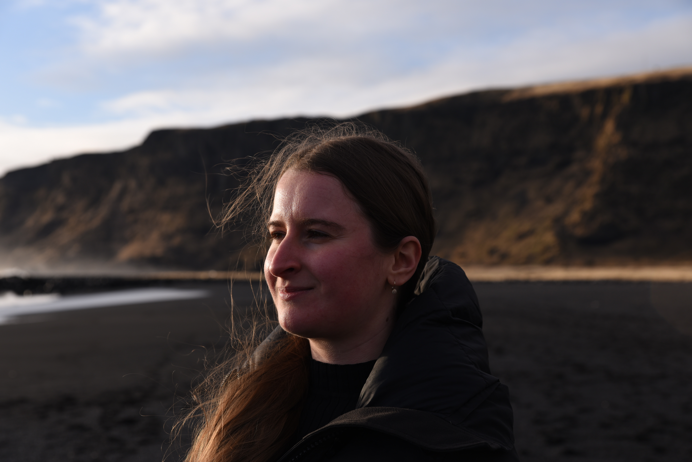

About
I am an interdisciplinary researcher and cultural manager working at the intersection of environmental science, technology, and community-led cultural initiatives. In Iceland, my work has spanned remote sensing and environmental monitoring, sustainability, and biotechnology. I am a recent graduate of the Environment and Natural Resources programme at the University of Iceland.
As co-founder of the Luminary Cinema Foundation, I work to expand access to cinema and culture in rural and isolated communities, currently reaching audiences across 20 villages in Bulgaria.
My interests include Earth observation, interdisciplinary research, cultural decentralisation, and international collaboration.

Researcher & cultural manager
Research & Projects
My environmental research focuses on applying geospatial technologies and data-driven methods to environmental monitoring and sustainability challenges.
- Remote sensing and machine learning for invasive species mapping
- Wetlands, biocapacity and ecological footprint accounting
- GIS, Earth observation and environmental applications
Cultural Work
Through the Luminary Cinema Foundation and its “Na kino, na selo” initiative, I work to decentralise access to cinema, support rural communities, and develop participatory cultural programmes.
My work brings together local cultural organisations, filmmakers, artists, and communities to make cultural experiences more accessible beyond major urban centres.
Contact
I welcome conversations about research, environmental projects, cultural initiatives, and potential collaborations.